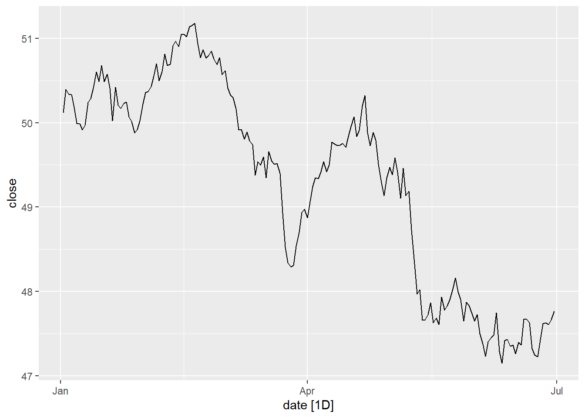

4.2 R’da Zaman Serilerinin Temsili
Zaman serileriyle veri analizinde kullandığımız yazılım ne olursa olsun veri tipine ilişkin özelleştirilmiş fonksiyon ve algoritmaların kullanılması bir zorunluluktur.
Rprogramında da, tıpkı diğerlerinde olduğu gibi, veri setinin bir zaman serisi olduğunun tanıtılması gerekir.R’da zaman serilerini temsil etmenin birden fazla yolu vardır.Yaygın olarak kullanılan nesne sınıfları aşağıda tanıtılmıştır. Daha fazla bilgi için bkz. CRAN Task View: Time Series Analysis
4.2.1 ts Nesnesi
Temel
R’da bir zaman serisitsnesnesi ile temsil edilebilir. Düzenli aralıklarla ölçülmüş ve kayıp gözlemlerin olmadığı veri setleri için idealdir.Örnek:
## [1] -0.6264538 0.1836433 -0.8356286 1.5952808 0.3295078 -0.8204684 0.4874291
## [8] 0.7383247 0.5757814 -0.3053884## [1] "numeric"x değişkeninin sınıfı sayısaldır (numeric). Şimdi bir zaman serisi, ts, nesnesi oluşturalım. Zamanın yıllık olarak 2010-2019 arasında ölçüldüğünü farzedelim:
## Time Series:
## Start = 2010
## End = 2019
## Frequency = 1
## [1] -0.6264538 0.1836433 -0.8356286 1.5952808 0.3295078 -0.8204684 0.4874291
## [8] 0.7383247 0.5757814 -0.3053884Oluşturulan nesnenin sınıfı ve özellikleri:
## [1] "ts"## $tsp
## [1] 2010 2019 1
##
## $class
## [1] "ts"ts_annual vektörünün sınıfı ts’dir. tsp (attribute) zamanın başlangıç, bitiş ve frekansını gösterir. Yıllık veri için frekans 1’dir.
- Temel
R’ınplotfonksiyonu zaman serisi nesnelerini algılar ve grafiği buna uygun olarak çizer:
- Nümerik vektör
xile grafik:
- Zaman serilerinden oluşan bir değişkenler kümesi:
set.seed(22)
n <- 120
x1 <- rnorm(n)
x2 <- rnorm(n)
t <- 1:n
y <- 10 + 0.1*t + 2*x1 - 3*x2 + rnorm(n)
df1 <- data.frame(y, x1, x2)
head(df1)## y x1 x2
## 1 11.01752 -0.5121391 -0.6665832
## 2 17.13793 2.4851837 -0.3467479
## 3 14.11995 1.0078262 -0.4358330
## 4 16.11770 0.2928146 -1.9470039
## 5 11.83468 -0.2089594 -0.8379082
## 6 17.89354 1.8580924 -0.7415289- Yukarıdaki veri çerçevesinin aylık verilerden oluştuğunu ve 2010m1’den itibaren 10 yıllık bir dönemi kapsadığını düşünelim:
## y x1 x2
## [1,] 11.01752 -0.5121391 -0.6665832
## [2,] 17.13793 2.4851837 -0.3467479
## [3,] 14.11995 1.0078262 -0.4358330
## [4,] 16.11770 0.2928146 -1.9470039
## [5,] 11.83468 -0.2089594 -0.8379082
## [6,] 17.89354 1.8580924 -0.7415289## $dim
## [1] 120 3
##
## $dimnames
## $dimnames[[1]]
## NULL
##
## $dimnames[[2]]
## [1] "y" "x1" "x2"
##
##
## $tsp
## [1] 2010.000 2019.917 12.000
##
## $class
## [1] "mts" "ts" "matrix"## [1] "mts" "ts" "matrix"- Benzer şekilde çeyreklik veriler için
frequency = 4olarak belirlenebilir:
## Qtr1 Qtr2 Qtr3 Qtr4
## 2018 0.7304693 0.7870054 0.8954003 0.3331258
## 2019 0.8876747 0.6141378 0.7607281 0.5440350- Verilerin bir alt kümesi
window()fonksiyonu ile oluşturulabilir. Örneğin,
## y x1 x2
## Jan 2018 18.40797 -0.33324995 0.10869187
## Feb 2018 15.74612 -0.39793547 1.45290569
## Mar 2018 19.74570 -0.50115035 -0.61267109
## Apr 2018 18.01528 -0.77273822 -0.06516846
## May 2018 15.36078 -1.71239612 0.26570978
## Jun 2018 17.60987 -0.79921870 -0.01060245
## Jul 2018 16.49052 -1.41085475 0.33320645
## Aug 2018 23.21067 0.53275820 -0.79305213
## Sep 2018 24.64894 -0.39770077 -1.19191589
## Oct 2018 19.28710 -0.28435325 0.69395132
## Nov 2018 24.51503 0.12498413 -1.19316828
## Dec 2018 27.16400 0.78012669 -1.41040845
## Jan 2019 19.16921 -0.87559719 0.40811576
## Feb 2019 15.56407 -1.15936503 1.04478745
## Mar 2019 19.88641 -0.14586878 0.39343983
## Apr 2019 17.44377 -1.67842869 0.48269703
## May 2019 19.31902 -1.32258464 0.02858935
## Jun 2019 18.43350 -0.55887740 0.41441915
## Jul 2019 18.84263 -2.48978148 -0.61271368
## Aug 2019 22.35360 1.17918927 0.76866790
## Sep 2019 23.95577 0.79370484 -0.31469479
## Oct 2019 23.80681 1.60743480 0.37070328
## Nov 2019 27.92537 0.06594797 -1.93087451
## Dec 2019 20.57888 1.02900536 0.796311384.2.2 zoo nesnesi
tsobjelerinde zaman tanımı sadece nümerik olabilir. Aylık, çeyreklik, yıllık verilerde bu sorun olmasa da düzensiz ölçümlü verilerde ve saatlik gözlemlerin yer aldığı verilerde sorun yaratabilir.Alternatiflerden biri
zoopaketidir (ve sınıfı). Bu paket Zeileis and Grothendieck (2005) tarafından yazılmıştır. Detaylar için bkz. : zoo: S3 Infrastructure for Regular and Irregular Time Series (Z’s Ordered Observations).
## [1] "2020-12-01" "2020-12-02" "2020-12-03" "2020-12-04" "2020-12-05" "2020-12-06"
## [7] "2020-12-07" "2020-12-08" "2020-12-09" "2020-12-10"## 2020-12-01 2020-12-02 2020-12-03 2020-12-04 2020-12-05 2020-12-06 2020-12-07
## 0.82822485 -0.27596111 0.90011072 0.40052611 -2.43993993 1.70488277 -0.35356859
## 2020-12-08 2020-12-09 2020-12-10
## -0.40279204 -0.01563910 0.04372756## [1] "zoo"tsnesnesi birzoonesnesineas.zoo()fonksiyonu ile dönüştürülebilir. Tersi içinas.ts()fonksiyonu kullanılabilir:
Örnek: AirPassengers verileri
4.2.3 xts nesnesi
- Diğer bir alternatif
xts(Extensible Time Series) paketidir vezoopaketini baz alır. Daha fazla detay için bkz. CRAN sayfası: xts: eXtensible Time Series.
##
## ################################### WARNING ###################################
## # We noticed you have dplyr installed. The dplyr lag() function breaks how #
## # base R's lag() function is supposed to work, which breaks lag(my_xts). #
## # #
## # Calls to lag(my_xts) that you enter or source() into this session won't #
## # work correctly. #
## # #
## # All package code is unaffected because it is protected by the R namespace #
## # mechanism. #
## # #
## # Set `options(xts.warn_dplyr_breaks_lag = FALSE)` to suppress this warning. #
## # #
## # You can use stats::lag() to make sure you're not using dplyr::lag(), or you #
## # can add conflictRules('dplyr', exclude = 'lag') to your .Rprofile to stop #
## # dplyr from breaking base R's lag() function. #
## ################################### WARNING #####################################
## Attaching package: 'xts'## The following objects are masked from 'package:dplyr':
##
## first, last## var1
## 2023-07-03 0.5986281
## 2023-07-04 0.4638573
## 2023-07-05 0.6464816
## 2023-07-06 0.7256413
## 2023-07-07 0.2013998## [,1]
## Jan 1749 58.0
## Feb 1749 62.6
## Mar 1749 70.0
## Apr 1749 55.7
## May 1749 85.0
## Jun 1749 83.5## [1] "xts" "zoo"## Monthly periodicity from Jan 1749 to Dec 1983
- Örnek: günlük veriler
## Open High Low Close
## 2007-01-02 50.03978 50.11778 49.95041 50.11778
## 2007-01-03 50.23050 50.42188 50.23050 50.39767
## 2007-01-04 50.42096 50.42096 50.26414 50.33236
## 2007-01-05 50.37347 50.37347 50.22103 50.33459
## 2007-01-06 50.24433 50.24433 50.11121 50.18112
## 2007-01-07 50.13211 50.21561 49.99185 49.991854.2.4 tsibble nesnesi
Başka bir alternatif zaman serisi gruplarının tanımlanmasına izin veren
tsibblenesnesidir.tidyvertspaketler topluluğunun bir parçasıdır ve R. Hyndman vd tarafından geliştirilmiştir, bkz. tidyvertstidyvertsşu paketlerden oluşur:tsibble,fable,feasts, vetsibbledata.Bu paketlerde yer alan fonksiyonlartidyversepaketleriyle uyumlu çalışır.Daha fazla detay için bkz tsibble: Tidy Temporal Data Frames and Tools. Ayrıca bkz. Hyndman, R.J., & Athanasopoulos, G. (2019) Forecasting: principles and practice, 3rd edition, OTexts: Melbourne, Australia.
tsibblenesnesi oluşturmak için
##
## Attaching package: 'tsibble'## The following object is masked from 'package:zoo':
##
## index## The following object is masked from 'package:lubridate':
##
## interval## The following objects are masked from 'package:base':
##
## intersect, setdiff, union## # A tsibble: 3 x 2 [1Y]
## year var1
## <int> <dbl>
## 1 2017 100
## 2 2018 90
## 3 2019 105Bir
tsibblenesnesinde zamanı temsil eden bir index değişkeni bulunur. Yukarıdaki örnekte zaman indeksiyeardeğişkenidirÖrnek: Minimal bir panel veri seti
tsdata2 <- tsibble(year = c(rep(2017,3), rep(2018,3)),
province = rep(c("Istanbul", "Ankara", "Izmir"),2),
GDPpc = c(65195,51922,45102,76769,60249,54305),
index = year,
key = province
)
tsdata2## # A tsibble: 6 x 3 [1Y]
## # Key: province [3]
## year province GDPpc
## <dbl> <chr> <dbl>
## 1 2017 Ankara 51922
## 2 2018 Ankara 60249
## 3 2017 Istanbul 65195
## 4 2018 Istanbul 76769
## 5 2017 Izmir 45102
## 6 2018 Izmir 54305## year## [[1]]
## province- Örnek: Ülke veri seti (
tsibbledatapaketinden)
## # A tsibble: 15,150 x 9 [1Y]
## # Key: Country [263]
## Country Code Year GDP Growth CPI Imports Exports Population
## <fct> <fct> <dbl> <dbl> <dbl> <dbl> <dbl> <dbl> <dbl>
## 1 Afghanistan AFG 1960 537777811. NA NA 7.02 4.13 8996351
## 2 Afghanistan AFG 1961 548888896. NA NA 8.10 4.45 9166764
## 3 Afghanistan AFG 1962 546666678. NA NA 9.35 4.88 9345868
## 4 Afghanistan AFG 1963 751111191. NA NA 16.9 9.17 9533954
## 5 Afghanistan AFG 1964 800000044. NA NA 18.1 8.89 9731361
## 6 Afghanistan AFG 1965 1006666638. NA NA 21.4 11.3 9938414
## 7 Afghanistan AFG 1966 1399999967. NA NA 18.6 8.57 10152331
## 8 Afghanistan AFG 1967 1673333418. NA NA 14.2 6.77 10372630
## 9 Afghanistan AFG 1968 1373333367. NA NA 15.2 8.90 10604346
## 10 Afghanistan AFG 1969 1408888922. NA NA 15.0 10.1 10854428
## # ℹ 15,140 more rowsglobal_economy veri setinde zaman indeksi Year ve anahtar (key) değişkeni Country’dir.
- Sıklıkla kullanılan zaman formatları ve ilgili fonksiyonlar (Kaynak: Hyndman and Athanasopoulos (2019) Forecasting: principles and practice, 3rd edition)
| Interval | Class | Function |
|---|---|---|
| Annual | integer/double |
start:end |
| Quarterly | yearquarter |
yearquarter() |
| Monthly | yearmonth |
yearmonth() |
| Weekly | yearweek |
yearweek() |
| Daily | Date/difftime |
as_date(), ymd() |
| Subdaily | POSIXt/difftime/hms |
as_datetime() |
- Mevcut bir zaman serisi nesnesi
tsibblenesnesine dönüştürülebilir. Örneğin,
library(tsibble)
library(tidyverse)
library(lubridate)
library(xts)
library(fpp3)
# use built-in daily data on closing prices from xts package
data("sample_matrix")
head(sample_matrix)## Open High Low Close
## 2007-01-02 50.03978 50.11778 49.95041 50.11778
## 2007-01-03 50.23050 50.42188 50.23050 50.39767
## 2007-01-04 50.42096 50.42096 50.26414 50.33236
## 2007-01-05 50.37347 50.37347 50.22103 50.33459
## 2007-01-06 50.24433 50.24433 50.11121 50.18112
## 2007-01-07 50.13211 50.21561 49.99185 49.99185# convert sample_matrix into tibble and create a date variable
df1 <- tibble(date = rownames(sample_matrix),
close = sample_matrix[,4]
)
df1 <- df1 %>%
mutate(date = lubridate::ymd(date))
df1## # A tibble: 180 × 2
## date close
## <date> <dbl>
## 1 2007-01-02 50.1
## 2 2007-01-03 50.4
## 3 2007-01-04 50.3
## 4 2007-01-05 50.3
## 5 2007-01-06 50.2
## 6 2007-01-07 50.0
## 7 2007-01-08 50.0
## 8 2007-01-09 49.9
## 9 2007-01-10 50.0
## 10 2007-01-11 50.2
## # ℹ 170 more rows## # A tsibble: 180 x 2 [1D]
## date close
## <date> <dbl>
## 1 2007-01-02 50.1
## 2 2007-01-03 50.4
## 3 2007-01-04 50.3
## 4 2007-01-05 50.3
## 5 2007-01-06 50.2
## 6 2007-01-07 50.0
## 7 2007-01-08 50.0
## 8 2007-01-09 49.9
## 9 2007-01-10 50.0
## 10 2007-01-11 50.2
## # ℹ 170 more rowsGünlük verilerden oluşan bu veri setinden hareketle aylık ortalamaları hesaplayarak yeni bir veri seti oluşturalım.
Bunun için önce
tsibble::yearmonth()fonksiyonunu kullanarakyear_monthisminde yeni bir değişken oluşturalım. Bu değişkeni gruplamada kullanacağız.
## # A tsibble: 180 x 3 [1D]
## date close year_month
## <date> <dbl> <mth>
## 1 2007-01-02 50.1 2007 Jan
## 2 2007-01-03 50.4 2007 Jan
## 3 2007-01-04 50.3 2007 Jan
## 4 2007-01-05 50.3 2007 Jan
## 5 2007-01-06 50.2 2007 Jan
## 6 2007-01-07 50.0 2007 Jan
## 7 2007-01-08 50.0 2007 Jan
## 8 2007-01-09 49.9 2007 Jan
## 9 2007-01-10 50.0 2007 Jan
## 10 2007-01-11 50.2 2007 Jan
## # ℹ 170 more rowstsibble_monthlyveri setinde zaman indeksidatedeğişkenidir.Bu aşamada
index_by()fonksiyonunu kullanarak özet istatistikleri hesaplayabiliriz (budplyrpaketindekigroup_by()fonksiyonuna benzemektedir).
tsibble_monthly2 <- tsibble_monthly %>%
index_by(year_month) %>%
summarize(close_avr = mean(close),
count = n())
tsibble_monthly2## # A tsibble: 6 x 3 [1M]
## year_month close_avr count
## <mth> <dbl> <int>
## 1 2007 Jan 50.2 30
## 2 2007 Feb 50.8 28
## 3 2007 Mar 49.5 31
## 4 2007 Apr 49.6 30
## 5 2007 May 48.3 31
## 6 2007 Jun 47.5 30- Günlük verilerin zaman grafiği

- Aylık verilerin zaman grafiği